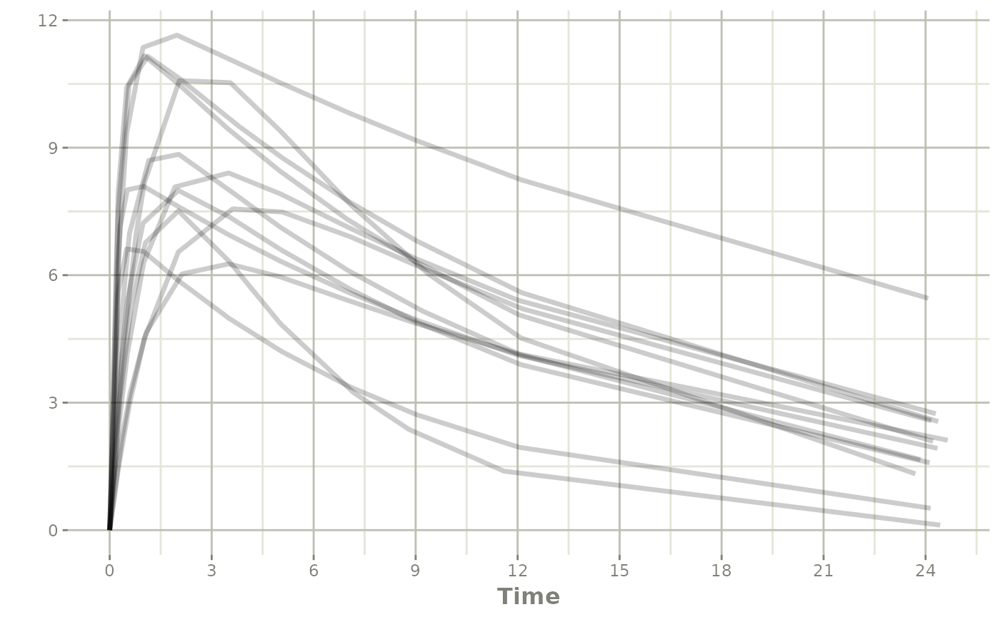

Using Prior Data for ODE solving
2024-03-27
Source:vignettes/rxode2-prior-data.Rmd
rxode2-prior-data.RmdUsing prior data for solving
rxode2 can use a single
subject or multiple subjects with a
single event table to solve ODEs. Additionally, rxode2 can use an
arbitrary data frame with individualized events. For example when using
nlmixr, you could use the theo_sd data
frame
library(rxode2)
#> rxode2 2.1.2.9000 using 2 threads (see ?getRxThreads)
#> no cache: create with `rxCreateCache()`
library(nlmixr2data)
## Load data from nlmixr
d <- theo_sd
## Create rxode2 model
theo <- function() {
ini({
tka <- 0.45 # Log Ka
tcl <- 1 # Log Cl
tv <- 3.45 # Log V
eta.ka ~ 0.6
eta.cl ~ 0.3
eta.v ~ 0.1
})
model({
ka <- exp(tka + eta.ka)
cl <- exp(tcl + eta.cl)
v <- exp(tv + eta.v)
d/dt(depot) = -ka * depot
d/dt(center) = ka * depot - cl / v * center
cp = center / v
})
}
## Create parameter dataset
library(dplyr)
#>
#> Attaching package: 'dplyr'
#> The following objects are masked from 'package:stats':
#>
#> filter, lag
#> The following objects are masked from 'package:base':
#>
#> intersect, setdiff, setequal, union
parsDf <- tribble(
~ eta.ka, ~ eta.cl, ~ eta.v,
0.105, -0.487, -0.080,
0.221, 0.144, 0.021,
0.368, 0.031, 0.058,
-0.277, -0.015, -0.007,
-0.046, -0.155, -0.142,
-0.382, 0.367, 0.203,
-0.791, 0.160, 0.047,
-0.181, 0.168, 0.096,
1.420, 0.042, 0.012,
-0.738, -0.391, -0.170,
0.790, 0.281, 0.146,
-0.527, -0.126, -0.198) %>%
mutate(tka = 0.451, tcl = 1.017, tv = 3.449)
## Now solve the dataset
solveData <- rxSolve(theo, parsDf, d)
#> ℹ parameter labels from comments will be replaced by 'label()'
#> using C compiler: ‘gcc (Ubuntu 11.4.0-1ubuntu1~22.04) 11.4.0’
plot(solveData, cp)
print(solveData)
#> ── Solved rxode2 object ──
#> ── Parameters ($params): ──
#> # A tibble: 12 × 7
#> id tka tcl tv eta.ka eta.cl eta.v
#> <fct> <dbl> <dbl> <dbl> <dbl> <dbl> <dbl>
#> 1 1 0.451 1.02 3.45 0.105 -0.487 -0.08
#> 2 2 0.451 1.02 3.45 0.221 0.144 0.021
#> 3 3 0.451 1.02 3.45 0.368 0.031 0.058
#> 4 4 0.451 1.02 3.45 -0.277 -0.015 -0.007
#> 5 5 0.451 1.02 3.45 -0.046 -0.155 -0.142
#> 6 6 0.451 1.02 3.45 -0.382 0.367 0.203
#> 7 7 0.451 1.02 3.45 -0.791 0.16 0.047
#> 8 8 0.451 1.02 3.45 -0.181 0.168 0.096
#> 9 9 0.451 1.02 3.45 1.42 0.042 0.012
#> 10 10 0.451 1.02 3.45 -0.738 -0.391 -0.17
#> 11 11 0.451 1.02 3.45 0.79 0.281 0.146
#> 12 12 0.451 1.02 3.45 -0.527 -0.126 -0.198
#> ── Initial Conditions ($inits): ──
#> depot center
#> 0 0
#> ── First part of data (object): ──
#> # A tibble: 132 × 8
#> id time ka cl v cp depot center
#> <int> <dbl> <dbl> <dbl> <dbl> <dbl> <dbl> <dbl>
#> 1 1 0 1.74 1.70 29.0 0 320. 0
#> 2 1 0.25 1.74 1.70 29.0 3.86 207. 112.
#> 3 1 0.57 1.74 1.70 29.0 6.81 118. 198.
#> 4 1 1.12 1.74 1.70 29.0 9.06 45.4 263.
#> 5 1 2.02 1.74 1.70 29.0 9.79 9.45 284.
#> 6 1 3.82 1.74 1.70 29.0 9.10 0.410 264.
#> # ℹ 126 more rows
## Of course the fasest way to solve if you don't care about the rxode2 extra parameters is
solveData <- rxSolve(theo, parsDf, d, returnType="data.frame")
#> ℹ parameter labels from comments will be replaced by 'label()'
#> using C compiler: ‘gcc (Ubuntu 11.4.0-1ubuntu1~22.04) 11.4.0’
## solved data
dplyr::as_tibble(solveData)
#> # A tibble: 132 × 8
#> id time ka cl v cp depot center
#> <int> <dbl> <dbl> <dbl> <dbl> <dbl> <dbl> <dbl>
#> 1 1 0 1.74 1.70 29.0 0 320. 0
#> 2 1 0.25 1.74 1.70 29.0 3.86 207. 112.
#> 3 1 0.57 1.74 1.70 29.0 6.81 118. 198.
#> 4 1 1.12 1.74 1.70 29.0 9.06 45.4 263.
#> 5 1 2.02 1.74 1.70 29.0 9.79 9.45 284.
#> 6 1 3.82 1.74 1.70 29.0 9.10 0.410 264.
#> 7 1 5.1 1.74 1.70 29.0 8.46 0.0440 246.
#> 8 1 7.03 1.74 1.70 29.0 7.56 0.00152 219.
#> 9 1 9.05 1.74 1.70 29.0 6.71 0.0000449 195.
#> 10 1 12.1 1.74 1.70 29.0 5.61 0.000000212 163.
#> # ℹ 122 more rows
data.table::data.table(solveData)
#> id time ka cl v cp depot center
#> <int> <num> <num> <num> <num> <num> <num> <num>
#> 1: 1 0.00 1.7436838 1.698932 29.04946 0.000000 3.199920e+02 0.00000
#> 2: 1 0.25 1.7436838 1.698932 29.04946 3.861730 2.069289e+02 112.18117
#> 3: 1 0.57 1.7436838 1.698932 29.04946 6.805372 1.184389e+02 197.69240
#> 4: 1 1.12 1.7436838 1.698932 29.04946 9.058196 4.539354e+01 263.13572
#> 5: 1 2.02 1.7436838 1.698932 29.04946 9.791088 9.450361e+00 284.42585
#> ---
#> 128: 12 5.07 0.9268162 2.437566 25.81614 8.442535 2.919432e+00 217.95370
#> 129: 12 7.07 0.9268162 2.437566 25.81614 7.074251 4.573778e-01 182.62989
#> 130: 12 9.03 0.9268162 2.437566 25.81614 5.892253 7.436222e-02 152.11524
#> 131: 12 12.05 0.9268162 2.437566 25.81614 4.432614 4.526550e-03 114.43300
#> 132: 12 24.15 0.9268162 2.437566 25.81614 1.414179 6.154773e-08 36.50865